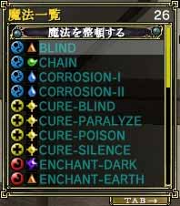
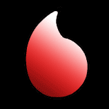
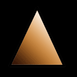
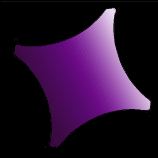
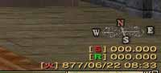

目次
>
ゲームについて
>
日本Falcom攻略
>
Sorcerian Online
>
チュートリアル
>
魔法
Sorcerian Online
|
概要
|
チュートリアル
|
|
魔法 に戻る
|
魔法の種類
魔法の種類
魔法の属性
魔法の種類
魔法は効果に応じて4種類に分けられます。この4種類とは「強化」、「弱体」、「回復・治癒」、「攻撃」の4つです。
「
強化
」とは自分自身、もしくはパーティーメンバーのステータスを向上させる魔法のことです。「SHIELD-I」などがそれに当たります。
「
弱体
」とは敵のステータスを低下させたり、状態異常にする魔法のことです。当然の事ながら味方に対して使うものではありません。「WEAK-HIT」などがそれに当たります。
「
回復・治癒
」とは自分自身、もしくはパーティーメンバーの体力を回復したり、状態異常を解除したりする魔法のことです。「HEAL-I」や「CURE-POISON」などがそれに当たります。
「
攻撃
」とは敵に直接ダメージを与える魔法のことです。「NEEDLE-I」などがそれに当たります。
魔法ウィンドウを表示して魔法の前の左にあるアイコンを見ることで、魔法の種類を調べることができます。
アイコン
種類
強化
弱体
回復・治癒
攻撃

(魔法ウィンドウ)
魔法の属性
魔法には属性が存在します。この属性とは「水」、「火」、「土」、「風」、「光」、「闇」の6種類です。
魔法の属性と、使う敵の属性に応じて効果の出方が変わるみたいです。また、
実際に確認したわけではありませんが
ラクリフォンス時間に応じて効果が変化するかもしれません。
魔法の属性を確認するには、魔法ウィンドウを開いて魔法の名前の左にあるアイコンを見てください。
アイコン
属性
水

火

土
風
光

闇

(左：魔法ウィンドウ 右：ラクリフォンス時間とその属性)
|
魔法 に戻る
|
|
概要
|
チュートリアル
|
Sorcerian Online
|
目次へ戻る
|
ページの上部へ
|